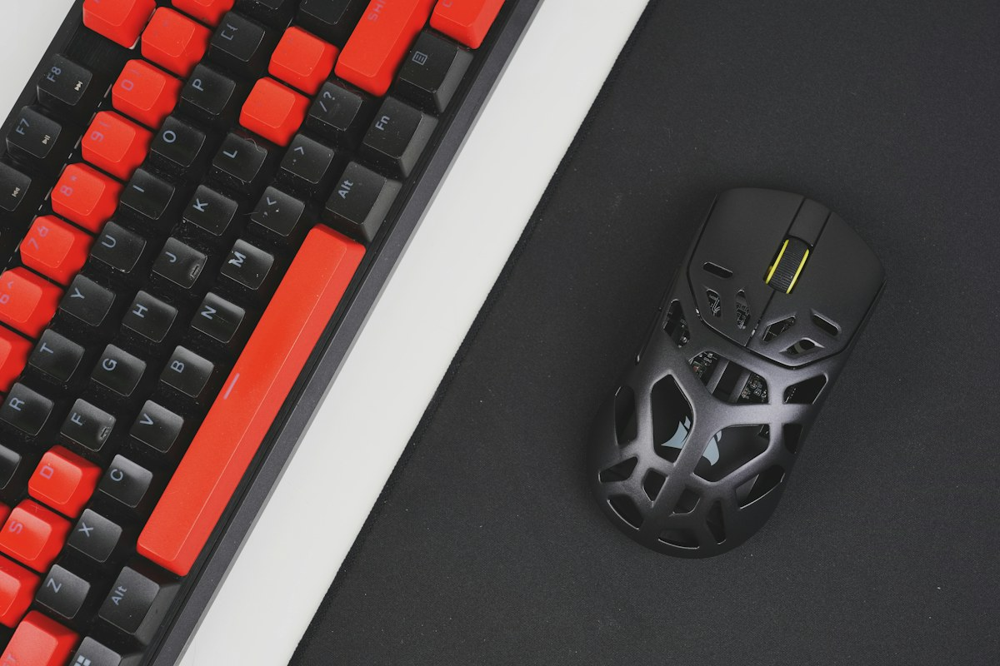

Objetivo
Demostrar una experiencia de catálogo de hardware gamer con búsqueda, filtros y estado de bolsa persistente durante la sesión.
Una tienda de periféricos gamer que deja explorar el catálogo, comparar categorías y reunir productos en una bolsa de compra.
El catálogo organiza teclado, audio y controles como una selección curada. La interfaz facilita filtrar y guardar artículos mientras presenta cómo podría sentirse una tienda enfocada en jugadores de PC.
Punto de guardado y sus productos son ficticios. El catálogo es de muestra: no hay inventario real, venta, pago ni confirmación de pedidos.
Demostrar una experiencia de catálogo de hardware gamer con búsqueda, filtros y estado de bolsa persistente durante la sesión.
Un listado de productos sin estructura puede dificultar la comparación. La tienda agrupa el equipo y da acceso rápido a categorías relevantes.
Personas que juegan o trabajan en PC y están explorando teclados, audio, mouse y accesorios.
Una composición de alto contraste, azul eléctrico y fotografía de escritorios gamer enmarca el catálogo sin recurrir a un panel genérico de tarjetas.
Seis productos de ejemplo, filtros por categoría, ordenamiento, cantidades, eliminación de artículos y resumen de bolsa que puede copiarse. No procesa pagos ni envía órdenes.
HTML, CSS y JavaScript nativos. Fotografías y recursos locales dentro de tienda/assets/.
La bolsa permite probar cantidades y resumen. El checkout de una tienda real requiere integrar pagos y operación comercial.


PROYECTO SIGUIENTE